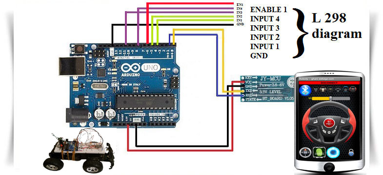
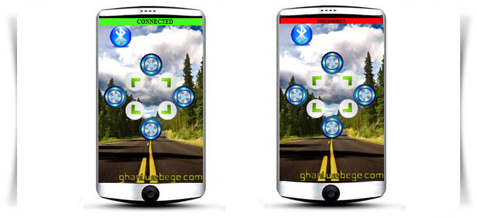
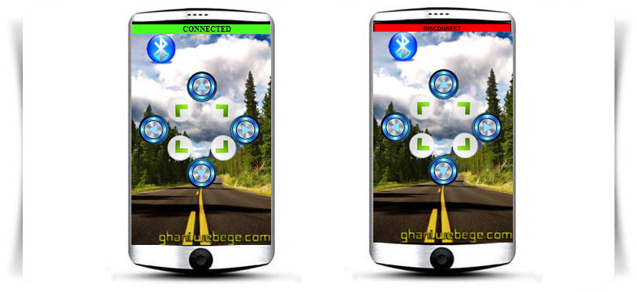
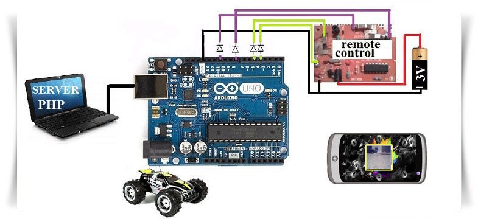
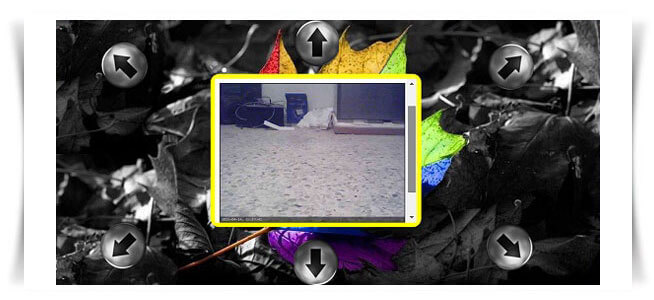

المشروع 1 : روبوتي 
2 المشروع 2: روبوتي
RC المشروع 3 : سيارة اندرويد
المشروع 4 : السيارة 1
المشروع 5 : السيارة 2
الـمشروع 6 : المنزل الذكي 1
الـمشروع 7 : المنزل الذكي 2
الـمشروع 8 :المنزل الذكي 3
الـمشروع 9 : الإنارة الأوتومتيكية

6V dc هذا المشروع يشرح كيفية صنع روبرت صغير متنقل بمحركين
و هاتف يشتغل بنظام اندرويد HC06 و وحدة بلوتوث Arduino uno بواسطة
: حيث نحتاج الى
arduino uno
HC06
6v محركين مع بطارية مناسبة
L298
KA 7805: معدل التوتر
22uF & 0.1uF مكثفتين
2:47kohm & 2:140ohm مقاومات
8دايود
4 LED
9V بطارية
اربط الأجهزة كما في المخطط التالي
الحجم الكبير للمخطط مبين هنا

تطبيق الأندرويد الخاص بالمشروع يسمح بالتحكم في حركة وسرعة الروبوت
يمكن للمستعمل تغيير شكل المقود والخلفية حيث يوجد ستة نماذج
1234 : عند تشغيل التطبيق للمرة الأولى سيطلب منك الهاتف رقم للأتصال بالبلوتوث وفي القياس يكون
النظام محمي بكلمة مرور مسجلة في برنامج الأردوينو يمكن تغييرها من دون تغيير اي شيئ في التطبيق
9999 وكلمة المرور الأصلية هي
تأكد من فصل البلوتوث عن الأردوينو عند تحميل برنامج الأردوينو
يمكن التحكم في الحركة بثلاث طرق
الضغط على العجلة , تدوير العجلة , تدوير الهاتف
Roboty.apk : يمكن تحميله من هنا Roboty تطبيق *
Roboty.ino : برنامج اردوينو يمكن تحميله من هنا *

هذا المشروع هو عبارة عن اظافة للمشروع الأول حيث لم يتغير اي شيئ الا من خلال
تثبيت هاتف محمول على الروبوت الأول حيث يستلزم تنصيب تطبيق
IP WEBCAM
الخاص بالبث الحي لكامرة الهاتف URL وهو مجاني في هذا الهاتف والذي بدوره يقدم لنا
والذي يستعمل في تطبيق
ROBOTY 2
حيث يمكن التحكم في الروبوت ومشاهدة مايتم تصويره مباشرة
ROBOTY 2.apk : يمكن تحميله من هنا ROBOTY 2 تطبيق

RCللتحكم في سيارة
HC06 و وحدة بلوتوث Arduino uno بواسطة
و هاتف يشتغل بنظام اندرويد نحتاج الى
:البرمجيات
MY robot.apk : يمكن تحميله من هنا MY robot تطبيق *
MY robot.ino : برنامج اردوينو يمكن تحميله من هنا *
: الأجهزة
اردوينو أونو *
HC06 وحدة بلوتوث *
diods و 4 RC سيارة *
مع سلك ثم قم بتلحيم السلك مع نقطة diode افتح جهاز التحكم للسيارة ثم قم بتلحيم
التلامس الخاصة باصدار الأمر بالسير في جهة معينة ثم قم بنفس الشيء مع الجهات الأخرى
كما في الصورة
: عند تشغيل التطبيق للمرة الأولى سيطلب منك الهاتف رقم للأتصال بالبلوتوث وفي القياس يكون
1234
 

RCللتحكم في سيارة
Arduino uno بواسطة
عن طرية النت (الهاتف) دون وحدة
اثرنت او بلوتوث نحتاج
:البرمجيات
أين يشتغل السرفر الخاص بك XAMPP برنامج *
2.7 PYTHON برنامج *
Pyserial برنامج *
: الأجهزة
اردوينو أونو *
diods و 4 RC سيارة *
السرفر ينقسم الى
INDEXcar.php
DATAROBOT.txt
DATAROBOT.php
(INDEXcar.PHP) مثال PHP يجب ان تكون صفحة السرفر من نوع
DATAROBOT.php
هذا البرنامج يستقبل البيانات عندما يتم الضغط على اى زر في نفس الوقت
(DATAROBOT.txt) يرسل المعلومات الى ملف نص
PYTHON دون انقطاع من طرف برنامج
لتحديد اي زر تم ضغطه اذا
(DATAROBOT.txt)
هو الجسر الرابط بين السرفر وبرنامج
PYTHON
والذي بدوره يرسل الأوامر الى الأردوينو كما نلاحظ في هذه الحلقة
لسنا بحاجة الى وحدة اثرنت او بلوتوث
برنامج بايثون الذي يقوم بقراءة المعلومات من السرفر و ارسال الأوامر الى الأردوينو
PYTHON.RC.py
برنامج الأردوينو الذي يقوم بقراءة البيانات من بايثون وينفذها
ARDUINO.RC.ino
مع سلك ثم قم بتلحيم السلك مع نقطة diode افتح جهاز التحكم للسيارة ثم قم بتلحيم
تلامس الخاصة باصدار الأمر بالسير في جهة معينة ثم قم بنفس الشيء مع الجهات الأخرى كما في الصورة

لأظافة كامرا الى واجهة الصفحة يجب تثبيت برنامج
Yawcam
والذي بدوره يقدم لنا الرابط الخاص بالبث الحي للفيديو لكامرة الحاسوب الشخصي
وذلك من خلال اظافة السطرين المواليين الى البرنامج
INDEXcar.php

هذا المشروع هو برنامج تفاعلي مكتوب ببايثون مع
opencv
بحيث يمكن للمستخدم
: التحدث مع البرنامج وطرح بعض الأسئلة. المهام المنفذة هي
الرد على الأسئلة التي يتم برمجتها*
تكرار الفقرة المذكورة من قبل المستخدم مع نمط مضحك*
إعطاء المستخدم ألوان الكائنات*
تتبع: الألوان والأشياء، والوجوه*
التحكم في السيارةاللعبة عن طريق الصوت وواجهة المستخدم*
تتبع الكرة من قبل السيارة وجعل المسافة بينهما ثابتة*
7 في الوندوز winsdk يجب تثبيت
الملف المظغوط السيارة 2
ان هذا المشروع عبارة عن شرح بسيط لكيفية التحكم في مختلف الأجهزة والمعداة
المنزلية بواسطة
و هاتف يشتغل بنظام اندرويد نحتاج الى HC06 وحدة بلوتوث
:البرمجيات
MY house.apk : يمكن تحميله من هنا MY house تطبيق *
MY house.ino : برنامج اردوينو يمكن تحميله من هنا *
: الأجهزة
اردوينو أونو *
HC06 وحدة بلوتوث *
relay 5v *
diod & LED. ohm 330 مقاومة *
transistor 2222A or C548B *
(relay & transistor & resistor & diod & led)4 للسيطرة على 4 عناصر نحتاج الى
: عند تشغيل التطبيق للمرة الأولى سيطلب منك الهاتف رقم للأتصال بالبلوتوث وفي القياس يكون
1234
الرسم البياني للأ جهزة بسيط كما في الصورة
ان هذا المشروع عبارة عن شرح بسيط لكيفية التحكم في مختلف الأجهزة والمعداة
المنزلية بواسطة الحاسوب او اي جهاز كالمحمول او اللوحات الذكية عن طريق
بدون وحدة اثرنت او بلوتوث نحتاج Arduino uno النت او الشبكة المحلية بواسطة
أين يشتغل السرفر الخاص بك XAMPP برنامج *
2.7 PYTHON برنامج *
Pyserial برنامج *
اردوينو أونو *
relay 5v *
diod & LED. ohm 330 مقاومة *
transistor 2222A or C548B *
السرفر ينقسم الى
INDEXhouse.php
DATAHOUSE.php
DATAHOUSE.txt
(NDEXhouse.PHP) مثال PHP يجب ان تكون صفحة السرفر من نوع
DATAHOUSE.php
هذا البرنامج يستقبل البيانات عندما يتم الضغط على اى زر في نفس الوقت
هذا الملف يقرأ(DATA2.txt) يرسل المعلومات الى ملف نص
لتحديد اي زر تم ضغطه اذا PYTHON دون انقطاع من طرف برنامج
PYTHON هو الجسر الرابط بين السرفر وبرنامج (DATA2.txt)
والذي بدوره يرسل الأوامر الى الأردوينو كما نلاحظ في هذه الحلقة
لسنا بحاجة الى وحدة اثرنت او بلوتوث
برنامج بايثون الذي يقوم بقراءة المعلومات من السرفر و ارسال الأوامر الى الأردوينو PYTHON.HOUSE.py
برنامج الأردوينو الذي يقوم بقراءة البيانات من بايثون وينفذها HOUSE.ino
ثم استمتع Relays اربط العناصر (الضوء، التلفزيون ..................) كل ما تريد التحكم به ب
الرسم البياني للأ جهزة بسيط كما في الصورة
بحيث يمكن للمستخدم opencv هذا المشروع هو برنامج تفاعلي مكتوب بايثون مع
: التحدث مع البرنامج وطرح بعض الأسئلة. المهام المنفذة هي
الرد على الأسئلة التي يتم برمجتها*
تكرار الفقرة المذكورة من قبل المستخدم مع نمط مضحك*
إعطاء المستخدم ألوان الكائنات*
تتبع: الألوان والأشياء، والوجوه*
التحكم في الأجهزة المنزلية عن طريق الصوت او واجهة المستخدم*
مشاهدة وحماية المنزل بواسطة ثلاث كاميرات مع انضمة انذار و حماية*
التنبيه عند اي انذار بمكالمة هاتفية*
برنامج المنزل الذكي 3 :المنزل الذكي 3

الـمشروع 9 : الإنارة الأوتومتيكية
تشتغل الإنارة اليا عند تحديد اي حركة امام الكاميرا ثم تنطفىء اليا بعد مدة يمكن تغييرها
كما يمكن ايضا تغيير درجة الحساسية للحركة بحيث تتناسب مع متطلبات المستعمل
SMART.LIGHT.py
HOUSE.ino